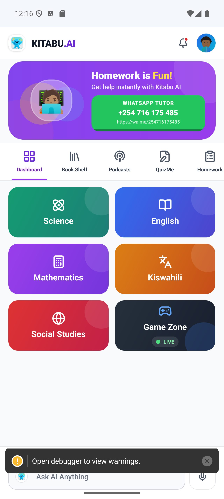

Schools
How schools can pilot AI learning safely
A school pilot should prove learner value while protecting teachers, students, data, and classroom trust.

Start with a narrow learning goal
The safest pilot begins with a clear goal: improve homework completion, support weak Math topics, add evening practice, or give teachers better remedial visibility. Avoid launching every feature at once.
Keep teachers in the loop
AI should not replace teachers. It should help them see who is struggling, where, and what kind of support may help. Teacher and admin surfaces are critical for school trust.
Use the right controls
Schools should look for role-based access, server-side AI control, audit direction, subscription visibility, and clear data boundaries. Production readiness also means privacy policy links, deletion flows, backups, monitoring, and rate limits.
Measure the pilot honestly
Measure learner activity, topic mastery, teacher workload, parent feedback, and payment/admin friction. If the pilot improves learning visibility without creating operational chaos, it is ready to scale.